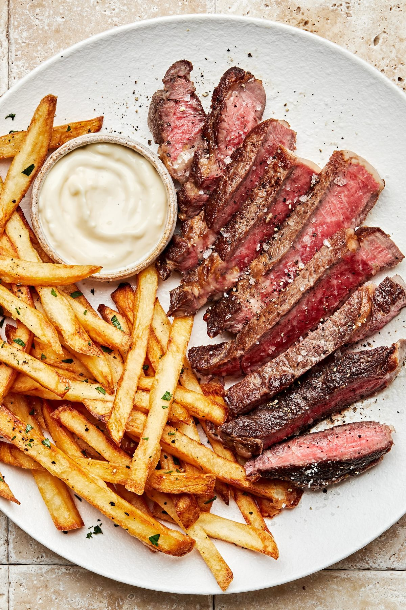

Steak Frites

What is Steak Frites?
This classic dish originated from France and Belgium, and highlights beef steak and deep-fried potatoes (better known as pommes frites or les frites).There are various ways of preparing this dish with different cuts of beef, seasonings, and sauces, but we think ours is pretty special!
We start with fresh cut russet potatoes and then fry them not only once, but twice - for the ultimate crispy crunch! We are using flavorful ribeye steaks and pan searing them to perfection.
Ingredients
- 3 large russet potatoes (about 3 pounds)
- Refined peanut oil for frying, about 5-6 inches
- 1 (2 to 2.5 pounds) ribeye steak, at room temperature
- 2-3 teaspoons kosher salt
- 1 tablespoon extra-virgin olive oil
- 3 tablespoons unsalted butter
- Black pepper
- Garlic aioli, for serving
Steps
- Fill a large bowl with ice and water. Peel the potatoes and slice them lengthwise into ⅓ -inch thick sticks. Alternatively you can use a mandolin slicer that has a ⅜ -inch setting. Add the potatoes to the ice water and soak for 15 minutes. Drain and pat completely dry.
- Attach a deep-fry thermometer to the side of a large, heavy pot. Add the peanut oil to the pot over medium high heat. Once the oil reaches 300°F, working in batches, carefully add the potatoes to the hot oil, and cook until beginning to soften but not browned, 3-4 minutes. Transfer the potatoes to a paper-towel-lined sheet pan.
- Meanwhile, heat a large skillet over high heat. Pat the steak dry and season all over with 2 teaspoons salt. Add the olive oil. Once the oil is just smoking, add the steak and cook until medium-rare (see Note) about 4-6 minutes per side. Transfer the steak to a cutting board and top with the butter. Let the steak rest for 5 to 10 minutes.
- Increase the peanut oil temperature to 350°F. Working in batches, return the potatoes to the hot oil and cook until golden brown and crispy, about 5 minutes. Transfer the fries to the paper-towel-lined sheet pan. Season with remaining ½ teaspoon salt and pepper to taste.
- Thinly slice the steak against the grain. Serve with the frites and garlic aioli on the side. Note: The most precise way to measure the doneness of meat is with an instant-read thermometer. For beef, rare is 125°F; medium-rare is 135°F; medium is 145°F; medium- well is 150°F; and well is 160°F. Medium-rare is our preference, but feel free to cook your steak however you like it best!